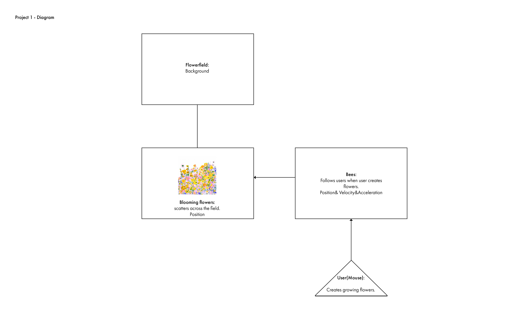

Project 1
Bees and Flower
Bees and Flowers is a game simulates a living environment for bees and flowers. I am interested in creating an environment for "living creatures" to interact with each other.
Bees and Flowers is a game simulates a living environment for bees and flowers. I am interested in creating an environment for "living creatures" to interact with each other.
I was expecting to create a little system that enables living beings to interact with the user. Two inputs include the mouse and spacebar. The user can use mouse and spacebar to scatter flowers across the field. The flowers could attract bees to fly around while stay away from the user(the mouse).
Many problems occured during the coding. Such as bees will not act like how I imagine it will be, and coding a flower-like shape is complex and feels unnatural. The main one being how to simulate the behaviors of the living be. While using the illustration style instead of pictures of real flowers and bees worked fine, but the key is to make each movement feels more natural. For instance, how can the growth of "flowers" be more organic? And how can bees behave more like an actual insects?